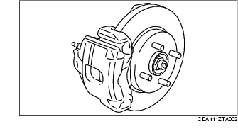

Front brake (disc) construction • Large diameter, ventilated disc type front brakes with a 258 mm {10.2 in} diameter and 22 mm {0.87 in} thickness have been adopted, improving braking force and fade resistance.